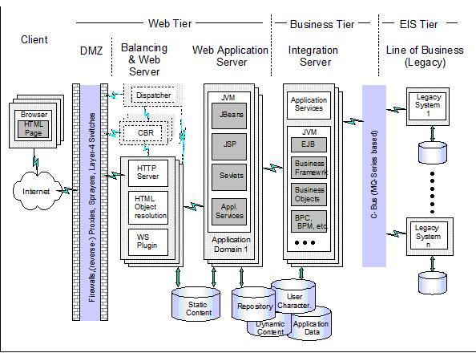

| Guideline: Defining Architecture Standards |
 |
|
1 DescriptionThe objective of this technique is to ensure that a design satisfies availability, security, system management, performance and capacity requirements. The sequencing of application design review in relation to other work on the operational model varies according to project circumstances. There are often tradeoffs with other objectives and requirements; for example, delivering high availability may compromise a need for simple system management. 2 ContextAt this stage of the engagement you should have gained agreement from your customer on two key points:
2.1 Building block decision tablesBuild a table listing the Decision Points together with notes about the impact of each decision on the design of the building block. If, because of available resource and the size and complexity of the project, you are not able to answer all of the design questions, you should make it clear what assumptions have been made and revisit those questions when you proceed to a more detailed design. The following building blocks are covered in this paper:
2.2 Security
|
| Decision Points | Impact |
|---|---|
| Do transaction request flows need to be encrypted? |
Encryption can be an expensive process and could impact the customer’s end-to-end budget. Deciding upon
which messages or parts of a message need encryption and the type of message flow across a firewall may
impact the design and certainly the technologies. Encryption technologies such as SSL can have a
significant increase in response time due to the additional CPU costs involved. |
| If servers or clients will be located outside the USA, what encryption acceptable? | The US is relaxing some controls over the export of cryptographic products but your customer may need to seek alternative cryptography from suppliers outside of the USA. |
| Is there a need for users to be identified to the servers with which they are communicating? How these users will be identified to the server? |
This is basic access security, which can be managed at the server, or it can be handled at the client using
applets or local client based logon procedures. |
| Does the customer need to restrict access to parts of the site? | The number and placement of firewalls is important to restrict unwarranted access to sensitive data and applications. |
| What privacy rules should be applied to information provided by users? | Policies should be in place for the use of collected user data. Many countries now have legislation governing the holding of personal data on computer files. |
| What are the legal requirements and company policies for auditing content, changes and transactions? | Companies have been held legally liable for the contents of their Web sites. |
Following table lists various methods available for user identification on the Web:
| Identification method | Uses | Comments |
|---|---|---|
| Basic Authentication | Simple userid/password authentication |
Basic Authentication has a specific meaning within the Web Protocol. It is supported by most Web
servers – including IBM HTTP Server - and allows simple control over access to files and directories based
on a userid. There are two main shortcomings to this method: - The password is masked rather than encrypted
for transmission, so this mechanism is not recommended for high-value transactions without some other form
of authentication - The browser caches the password and resubmits it on demand for later transactions. There is no explicit logoff mechanism. This makes it unsuitable for walk up-and-use kiosk applications. Unless a user remembers to close the browser, his identity can be assumed by the next user of the workstation. |
| Client Certificates | Strong authentication | This method authenticates a user with public/private key technology. The technique is used by web servers and by the standard X.509 certificates of the Web SSL v3 protocol. It requires infrastructure to issue and manage certificates. |
| Application specific | General user authentication | In this method, the Web server, the App Server or both handle user identification. |
2.3 Systems management and administration
Systems management is a very broad term, which encompasses many disciplines such as performance measurement,
availability reporting, reactive problem reporting, software distribution, and updates, plus many types of problem
determination tools. Caution must be exercised when applying traditional system management techniques to the Web, since
many aspects of an Internet enabled environment are not under user control. This would apply to such areas as
end-to-end performance or problem determination of network outages.
| Decision Points | Impact |
|---|---|
| Does the customer have the personnel and infrastructure to install, administer and maintain its own Web environment? | If not, you may need to factor into your design ways to develop the appropriate infrastructure. This will probably be more a financial consideration than system design, since it will probably involve hiring new skills, retraining existing skills, or commissioning the services of a third party service provider. |
| What hours should the service be available? |
This depends very much on the nature of the customers’ business, although Web access is changing the nature
of the way that many customers do business today. This may require supporting access from different time
zones (typically across the Internet). |
| What is the response times targets? | This can be an extremely variable factor depending very much on the complexity of the transaction, the number of concurrent users, the power of the CPUs serving these users, as well as network response times. On an Internet environment there is no way to accurately establish network response time. However, if despite the unknowns you can budget for end-to-end response, it will help to checkpoint each component within the building blocks during the design phase. |
| How should the architecture support the process of problem reporting, tracking and fixing? | A fully architected solution will almost certainly involve many diverse and complex technologies but not by choice. |
2.4 Client-server building block
A key question comes in terms of application technology is what browser software will be used, and whether the users are Internet or Intranet based.
| Decision Points | Impact |
|---|---|
| Is the user connecting across an intranet or the Internet? | On an intranet you will have some control over the platform and software specifications of your clients. This may be important, for instance, if you have specific levels of Java to support. If your users connect via the Internet, your design point should be the two leading browsers. |
| What national languages should the site support? | You clearly need to support the languages of your e-business customer set. If necessary, you may need to have code support for different languages if your customer’s business extends across different countries. |
| How will the choice of client affect end-to-end response? |
Key Internet technologies should be considered with respect to their affect on user response
time. |
| Is there a need to distribute application code, and if so, how will it be done? | This issue relates to two areas: The first concerns whether the customer’s users have the facilities available to access the Internet, such as Internet browser software on their machines. The second point relates to the downloading of special software such as applets, which may be needed to access the Application server environment. |
| How will I implement my Web access function to best suit my Application server function? | Will I use servlets, distributed objects, CGI programs, or server APIs? Usage patterns of users, skill level of developers, number of concurrent users, and expected response times all are factors that will affect how the business logic should be architected. For example, casual, infrequent access by a user may dictate a simple CGI server API interface, while a highly interactive user requiring repeated interaction with the server may dictate a servlet or distributed object approach. |
| What security functions are required and how will these be dictated by the server technology? | All areas of security should be considered: authentication, authorization, privacy, data-integrity, non-repudiation, auditing capabilities, as well as others. What additional capabilities (such as SSL and HTTPS) can be added to restore security to its existing level? In many cases, security may have to be strengthened if access is extending on a public basis through the Internet. |
2.5 Network building blocks
| Decision Points | Impact |
|---|---|
| How will I manage very large numbers of concurrent browser requests? | When connecting to the Internet, where the number of user requests are indeterminate and possibly very large, you may need to consider some front-end server support such as Network Dispatcher to workload balance the browser requests to the back-end application server environment. |
| How does the network affect my end-to-end response time? | Compare estimated traffic against available bandwidth to come up with initial estimates of network responses. Take into account peaks as well as average loading. |
2.6 Portability and Scalability
This addresses issues that you may have to review if a future requirement exists for porting the proposed architecture to other or additional platforms.
| Decision Points | Impact |
|---|---|
|
Will there be a requirement for the customer to expand their current user environment? |
This can occur as a result of growing the current intranet environment or adding Internet access capability
to the current user environment. For the first situation this can be sensibly projected, and a network
structure can be architected to allow for this future growth. The second situation is far less predictable
and consequently far more difficult to plan for. Therefore, the points to consider are: - Is it viable to have just one Web server for all potential Internet connections or do you route your HTTP requests to different Internet gateways in order to distribute the user load? - If there is a requirement to download applets to each Internet browser that sends in an HTTP request, is it therefore necessary to distribute the Web server load across a number of different Web servers? In either situation you should choose an architecture that allows you to scale your front-end to support additional Internet connections. It is essential to try to grow your front-end server support for additional users with zero or minimal disruption to the Web and Application server environment. |
2.7 Application and data logic
Application development will relate mainly to the programming requirements for the client, however there will be programming effort required at the server if client applications need to be downloaded prior to use.
| Decision Points | Impact |
|---|---|
| Has it been determined whether to use traditional programming development, object technology, or integrated packages? | Existing packages, if they meet the requirements, are usually faster to implement. However, object technologies such as C++, Java, or CORBA can offer benefits of speed and maintenance through their built-in reuse capability. Although you may only be looking at client application software at this stage, you should also look forward towards future server application architectures. If there is a requirement for the customer to make future server applications more object oriented, then it may be of advantage to consider these technologies for your proposed client applications. |
| Is normal HTML presentation adequate, or should the user interface be enhanced through the use of Java applets? | Java applets can be used to make the presentation more flexible and user friendly, especially in higher volume transaction-based applications. However, they take time to download and may be a concern over dial-up connections. |
| If the client application uses applets in the browser, will there be any security considerations? | A Java applet already has inbuilt security that only allows it to communicate with the Web server from which it was downloaded. If the browser needs to communicate with other Web servers on the network, then you should consider either the use of signed applets, or indirect connection through the applets’ own server, as a means of doing this. |
| Is there value in placing some of the business application logic on the browser? | You should determine how best to distribute presentation logic. You can, for example, use straight HTML on the browser, which implies that all validation of user input is carried out on the server. This may be all right for some applications where little input is needed from the user. However, if interaction is needed from the user as in a transaction-based application, can the server application support the amount of client-to-server interactions that this might produce? The use of Java and scripting languages should be considered as a means of placing more application logic in the browser, thereby reducing client/server flows. |
| Will client-side scripting add any benefit to the function in the browser? | JavaScript and JScript are languages, which are imbedded within the HTML, and when interpreted by the browser, can provide additional function to enhance the user interface and perform some validation of the user input. Because of incompatibilities between some browsers, you should ensure that you adequately test them in the environment in which you plan to use them. |
2.8 Conclusion
What we have done is to look at each of the building blocks in their most basic form and to construct a set of decision points about which we can build the design criteria upon which to architect our solution. For each building block we would normally expect to see a list of alternative options from which we can choose to build our solution. In many cases, the customer will have imposed constraints or requirements upon us, which will narrow down these options. At this point in the design approach as discussed, we should have completed three important tasks:
-
Collected business requirements and other requirements from the customer with agreement from the customer that
these requirements are correct, complete, and may be used to build the solution.
-
Developed a business scenario that represents the business processes, which your design will support.
- Started the process of developing architectural alternatives to the customer’s business situation within the requirement definition provided by the customer.
In the end as required review the design and revise it as necessary to satisfy availability, security, performance and system management requirements.
3 References
ESS Reference Architecture:

| © Copyright IBM Corp. 1987, 2012 All Rights Reserved Property of IBM These materials are intended only for use as part of an IBM engagement |